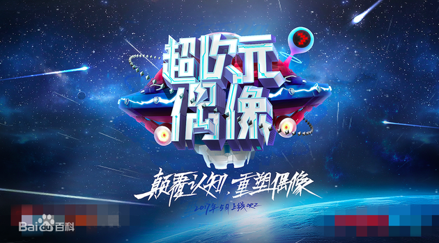

超次元偶像
《超次元偶像》是由芒果娛樂、艾德韋宣與優酷聯合出品、花唄獨家冠名的宇宙首檔進階式beta綜藝真人秀。 《超次元偶像》要做原創推星實戰模式開拓者，網羅各大經紀公司、明星工作室的優質新人來到節目中成為全新偶像。
固定嘉賓（學員）：馬思超、賀開朗、陳宥維、王鶴棣、梁靖康、彥希、李熹子、藍博、龔子棋、銘亮。
真人秀節目《超次元偶像》官方微博發佈了一組節目信息。首款概念海報中，何炅將在《超次元偶像》中顛覆認知，重塑偶像的概念。 據悉，此檔節目將打破市場上選秀節目的桎梏，做原創偶像養成節目，突破傳統唱跳形式，用實戰主題訓練真實記錄十位演藝圈新人的偶像進階之路。 而何炅也將深入其中用自己的經驗、人脈和資源幫助10位少年成為新生代國民偶像，開啓推星模式。
2016年雖被稱為國內偶像養成類節目元年，但是大多數還是沿襲國外的模式，沒有因地制宜創新發展。不僅如此社會也在熱議青年偶像德藝雙馨的話題， 使得偶像市場逐漸迴歸理性。在此背景下，節目將跳出練習室、演播廳，貼近市場和粉絲，表現新人的職業操守、職業道德，展示他們的個性和人格魅力， 培養最具新時代特質的優質國民新偶像。